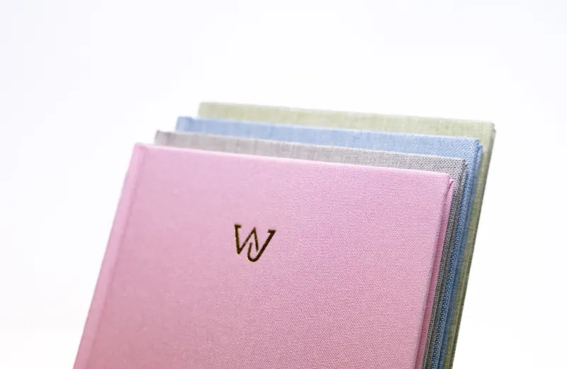
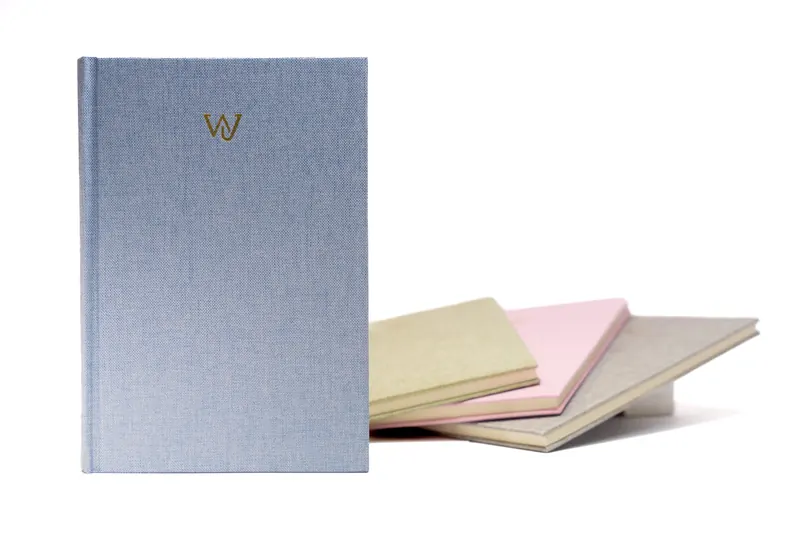
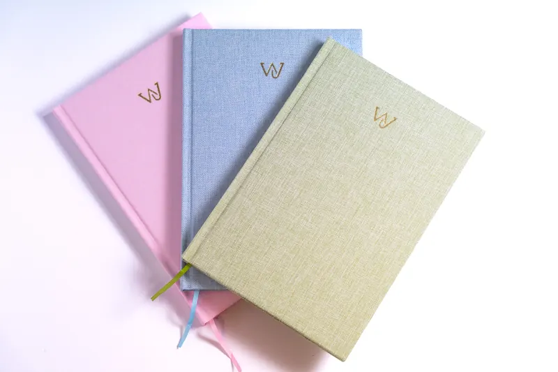

How it started
It all began with one curious traveller on an exchange program. Along the way, he met lifelong friends and memories he never wanted to forget. He started asking the people he spent quality time with fun or thoughtful questions, scribbling their answers on scraps of paper and sticking them into his journal. He preferred to keep these interactions and memories of people instead of souvenirs.
The journey
Over years of solo backpacking, exchange programs, and working abroad, that simple habit became something bigger: a collection of stories, friendships, and feelings that would have otherwise faded. That once-scrappy notebook turned into something meaningful - a time capsule of connection.


The vision embodied
Wander Journal was created so that others could experience the same magic: a place to capture the people, places, and moments that shape you while you’re out in the world. It’s something to look back on and re-live the best parts of your journey long after the plane has landed.